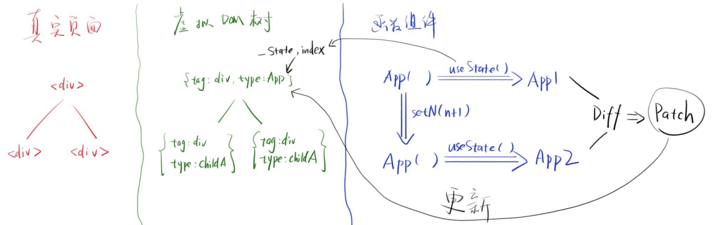
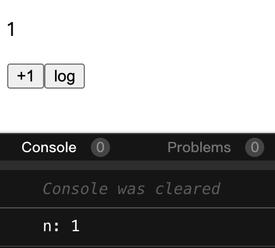
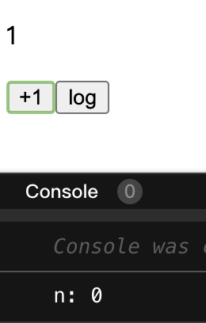
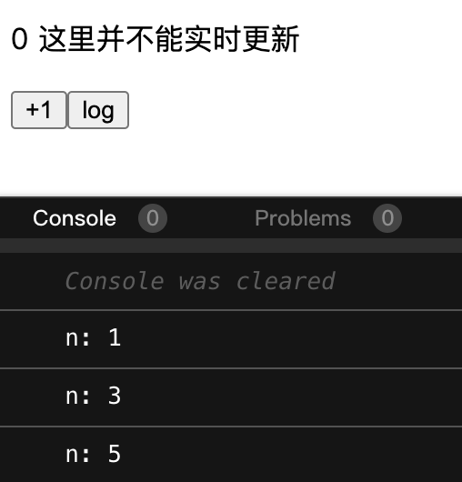
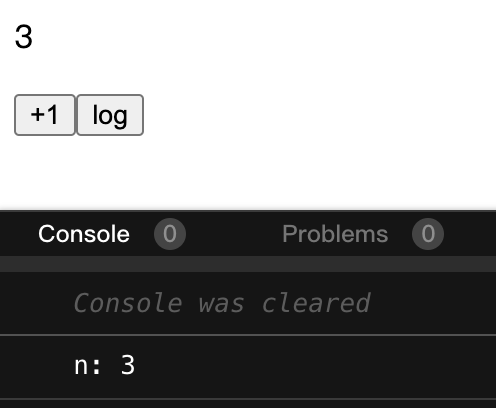
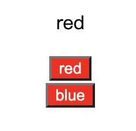

useState原理
1 useState简单实现
1.1 示例
- 点击按钮，结果+1
import React from "react";
import ReactDOM from "react-dom";
const rootElement = document.getElementById("root");
function App() {
const [n, setN] = React.useState(0);
return (
<div className="App">
<p>{n}</p>
<p>
<button onClick={() => setN(n + 1)}>+1</button>
</p>
</div>
);
}
ReactDOM.render(<App />, rootElement);
- 运行过程分析
- 首次render
<App/>，调用App()方法，得到虚拟DOM，React会生成真实DOM - 用户单击button，调用
setN(n+1)，并再次render<App/>，调用App()方法，得到新的虚拟DOM，经过DOM Diff运算，React会更新真实DOM - 每次调用
App()，都会运行useState(0)
- 首次render
- 执行
setN的时候会发生什么？n会变吗？App()会重新执行吗？- setN一定会修改某个数据x，而不是直接修改n，并将n+1存入x
- setN一定会触发
<App/>重新渲染
- 每次重新执行
App()时，都会执行useState(o)，那么n每次的值会有不同吗（即不为0）- 每次n的值都会不同，说明useState肯定会从x读取n的最新值，而不是简单的初始化n为0
- x
- 每个组件有自己的数据
x，即state
- 每个组件有自己的数据
1.2 简易useState实现
依据上面的分析，现在可以初步尝试一下手写myUseState
- 定义
myUseState，接受初始值initialValue，返回一个数组
const myUseState = (initialValue) => {
return [state, setState]
}
- 定义
state变量和setState方法，并实现re-render
const myUseState = (initialValue) => {
// 定义state变量
let state = initialValue
// 定义useState方法
const useState = (newValue) => {
// 将新值赋给state
state = newValue
// re-render
ReactDOM.render(<App />, rootElement)
}
return [state, setState]
}
- 每次执行都会重新把初始值赋给state，导致n的值不会发生改变。因此需要将state定义在函数外面，避免被myUseState重置。
let _state;
const myUseState = (initialValue) => {
// 对_state值进行判断，重新赋值或者保持上次的值
_state = _state === undefined ? initialValue : _state
const useState = (newValue) => {
_state = newValue
ReactDOM.render(<App />, rootElement)
}
return [_state, setState]
}
至此，针对单一组件单一状态值的简易版本useState就完成了，但仍存在一些问题。
1.3 多个state的情况
-
问题：如果一个组件用了两个useState，怎么办
-
思路：
- 改写_state为对象：_
- _比如_state = { n : 0, m : 0 }
- 不行，因为useState(0)并不知道要赋值的变量的key是m还是n
- 改写_state为数组：_
- 比如_state = [ 0, 0 ]
- 第一次useState就操作第一个数，第二次就操作第二个数
- 改写_state为对象：_
-
改写_state为数组
- 定义index变量，标识state的初始化与操作顺序。初步改写如下：
import React from "react"; import ReactDOM from "react-dom"; const rootElement = document.getElementById("root"); let _state = [] let index = 0 const myUseState = (initialValue) => { _state[index] = _state[index] === undefined?initialValue:_state[index] const setState = (newValue) => { _state[index] = newValue ReactDOM.render(<App />, rootElement); } index += 1 // 此处返回的实际上总是下一个_state值，因为上面的index已经加一了 // 将其放到return后面的话是不会被执行的 return [_state[index], setState] } function App() { const [n, setN] = myUseState(0); const [m, setM] = myUseState(0); return ( <div className="App"> <p>{n}</p> <p> <button onClick={() => setN(n + 1)}>+1</button> </p> <p>{m}</p> <p> <button onClick={() => setM(m + 1)}>+1</button> </p> </div> ); } ReactDOM.render(<App />, rootElement);- 由于出现了
index += 1的执行顺序问题，页面中的m和n值得不到正确显示。需要定义中间变量currentIndex解决这个问题：
... const myUseState = (initialValue) => { // 将当前index值赋给中间变量 const currentIndex = index _state[currentIndex] = _state[currentIndex] === undefined ? initialValue : _state[currentIndex] const setState = (newValue) => { _state[currentIndex] = newValue ReactDOM.render(<App />, rootElement); } index += 1 // 此时index的变化对返回值就不会产生影响了 return [_state[currentIndex], setState] } ...- 此时单击+1，没有发生任何变化。通过控制台打印出currentIndex的值我们发现，首次渲染
<App/>时，currentIndex为0和1；但当单击+1时，currentIndex变为了2和3，导致返回的数组每次useState后都会增加两个值，说明index每次执行useState都继续+1。那么我们应该在每次re-render时重置index为0：
... const setState = (newValue) => { _state[currentIndex] = newValue // before re-render index = 0 ReactDOM.render(<App />, rootElement); } ...- 完成多个state的状态处理！
-
数组方案缺点
- 第二次渲染时必须保证useState调用顺序完全一致，否则state就乱了
- 同样React不允许useState出现在
if等条件判断语句中，规定hooks在每次渲染中必须保持严格一致的执行顺序。
-
React为每个组件创建自己的
_state和index，放在组件对应的虚拟节点对象上。 -
图示：App组件的更新过程（两个子组件也经历同样的过程）

1.4 总结
-
每个函数组件对应一个 React节点*
-
React的节点实际上应该是FiberNode，_state的真实名称为memorizedState，index的实现则是用到了链表
-
-
-
每个节点保存着
state和index -
useState会读取
state[index] -
index由useState出现的顺序决定 -
setState会修改
state,并触发更新
2 n的分身(setN会直接改变n吗)
- 背景：两个按钮，一个是单击+1，另一个是在3s后打印出n的值。
import React from "react";
import ReactDOM from "react-dom";
const rootElement = document.getElementById("root");
function App() {
const [n, setN] = React.useState(0);
const log = () => setTimeout(() => console.log(`n: ${n}`), 3000);
return (
<div className="App">
<p>{n}</p>
<p>
<button onClick={() => setN(n + 1)}>+1</button>
<button onClick={log}>log</button>
</p>
</div>
);
}
ReactDOM.render(<App />, rootElement);
-
先+1再log时，控制台3s后打印出：
n : 1，在预料之中。
-
先log再+1时，控制台3s后打印出：
n : 0，而不是有部分人预想的n：1。
-
为什么log出了旧数据？
- 在单击log后，无论点击多少次+1，即无论n改变了几次，log始终都会读取点击log那一刻的n值
- 说明每次setN不会直接修改n值，而是产生一个新的n。
- 如果想要有一个贯穿始终的状态，办法有很多
3 贯穿始终的状态
最直接的方式就是定义全局变量，即window.xxx，除了很low别的没啥毛病
3.1 useRef
-
useRef不仅可以用于引用div，还能用于任意数据
-
示例
import React from "react"; import ReactDOM from "react-dom"; const rootElement = document.getElementById("root"); function App() { const nRef = React.useRef(0); const log = () => setTimeout(() => console.log(`n: ${nRef.current}`), 1000); return ( <div className="App"> <p>{nRef.current} 这里并不能实时更新</p> <p> <button onClick={() => (nRef.current += 1)}>+1</button> <button onClick={log}>log</button> </p> </div> ); } ReactDOM.render(<App />, rootElement);无论+1与log的顺序如何，log总能打印出最新的n值，因为nRef是唯一的。

但nRef的改变并不能驱动页面刷新，可以借助useState帮助页面刷新
... function App() { // useRef实际上就是个简单的对象 const nRef = React.useRef(0);// { current : 0 } // 只需借助setState方法 const update = React.useState(null)[1] const log = () => setTimeout(() => console.log(`n: ${nRef.current}`), 1000); return ( <div className="App"> <p>{nRef.current}</p> <p> <button onClick={() => { nRef.current += 1 update(nRef.current) }}>+1</button> <button onClick={log}>log</button> </p> </div> ); } ...在改变nRef的值时，随便改变一下setState的值，页面就会同时刷新

3.2 useContext
-
useContext不仅能贯穿始终，还能贯穿不同组件
-
示例
import React from "react"; import ReactDOM from "react-dom"; import "./styles.css"; const rootElement = document.getElementById("root"); // 创建上下文（全局）对象 const themeContext = React.createContext(null); function App() { const [theme, setTheme] = React.useState("red"); return ( // 将状态值theme以及改变状态的方法setTheme传入value中 <themeContext.Provider value={{ theme, setTheme }}> // 通过theme值改变className，从而改变主题样式 <div className={`App ${theme}`}> <p>{theme}</p> <div> <ChildA /> </div> <div> <ChildB /> </div> </div> </themeContext.Provider> ); } function ChildA() { // 通过useContext读取到父组件的themeContext对象，取出其中的setTheme方法 const { setTheme } = React.useContext(themeContext); return ( <div> <button onClick={() => setTheme("red")}>red</button> </div> ); } function ChildB() { const { setTheme } = React.useContext(themeContext); return ( <div> <button onClick={() => setTheme("blue")}>blue</button> </div> ); } ReactDOM.render(<App />, rootElement);
3.3 总结
- 每次重新渲染，组件函数就会再次执行
- 对应的所有state都会出现
「分身」，旧的state和新的state可以同时存在（例如setTimeout时），之后旧的state会消失（垃圾回收） - 如果你不希望出现分身，可以用
useRef/useContext等
最后修改于 2021-08-07